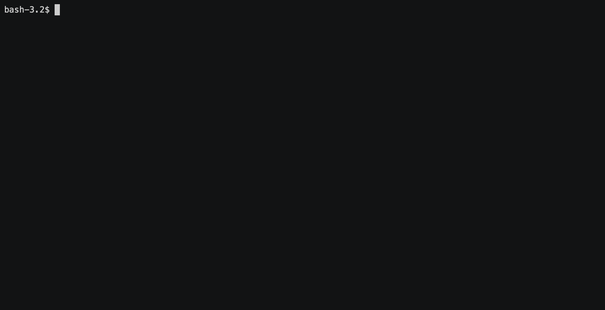
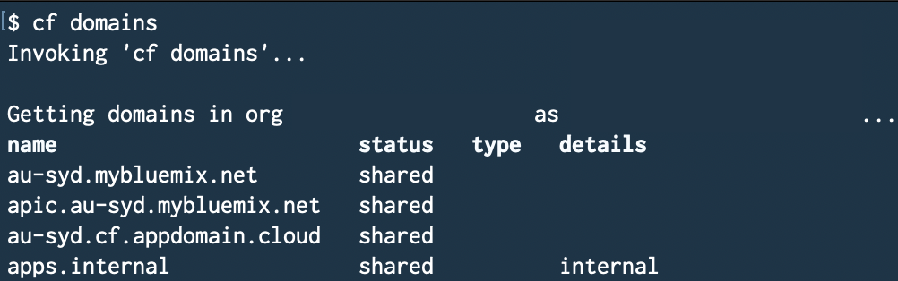

Beyond the basics with Cloud Foundry
The advent of Docker changed the way we develop applications. Once you had written a Dockerfile and built the image, your application will run (almost) anywhere, regardless of the underlying operating system, and best of all, it just works. You can then expose ports, map volumes to persist data and deploy your image in Docker Swarm or Kubernetes (K8s). With great flexibility, however, comes greater costs, whether that is increased developer’s skillset requirements and time spent on writing multiple K8s YAML config files, or pricier services on your favourite cloud provider.
This blog post presents the usage of different tools and interesting tidbits to ease development with Cloud Foundry (CF), similar to the likes of Docker. These include:
- Developing and testing CF applications locally
- Running Docker images inside a CF container
- Sequencing start-ups of multiple CF applications
- Configuring container-to-container networking
For the remainder of this blog post, I will be using toddler-auth as the example.
Which CF CLI to use
Just before we get started, if you are using the standalone IBM Cloud CLI, it bundles in CF CLI. Everything that comes after ibmcloud cf maps to the normal Cloud Foundry cf’s command. Personally, because I use IBM Cloud day-to-day, I removed cf and created an alias to ibmcloud cf with alias cf='ibmcloud cf'. Henceforth, any mentions of cf refers to ibmcloud cf.
Developing locally with CF Local
CF Local lets you develop locally and requires Docker to be installed. To install CF Local, invoke cf install-plugin cflocal. CF Local only uses a local.yml instead of manifest.yml.
Writing local.yml is similar to a docker-compose.yml file. After all, they are YAML files. You can place multiple applications, specify environment variables just like any CF apps.
---
applications:
- name: toddler-auth
routes:
- route: toddler-auth.apps.internal
memory: 128M
disk_quota: 128M
env:
TODDLER_USERNAME: <username>
TODDLER_PASSWORD: <password>
TODDLER_WORLD_ID: <worldId>
Once you have navigated to the application folder, stage the application with cf local stage toddler-auth.
Staging the application…
Then, run the application with cf local run toddler-auth.
Running…

The first staging period can take some time to download buildpacks and set things up, but once it completes, CF Local creates .cache files inside the application’s directory. Subsequent runs are faster.
Deploying Docker images into CF containers
Sometime in 2015, Cloud Foundry started to support Docker images by adopting the Open Container Initiative (OCI) container execution interface. For more information on deploying a Docker image, have a look at the full documentation. Two most important tidbits are:
- Only 1 exposed port per image is supported.
- Exposed port is controlled by the
EXPOSEdirective in the Dockerfile.
While you can control the exposed port by other means as outlined in the docs, using the default exposed port is the easiest way to go. An example to using a Docker image is provided in toddler-auth’s manifest.yml:
---
applications:
- name: toddler-nats
memory: 128M
disk_quota: 256M
docker:
image: bitnami/nats:latest
routes:
- route: toddler-nats.apps.internal
In the above example, I am running an application named toddler-nats. It uses bitnami’s nats.io image from Docker Hub and maps an internal route of toddler-nats.apps.internal.
Sequencing applications start-up
In the world of Docker Compose, Swarm and Kubernetes, applications are started in parallel. Applications startup sequence is not controlled by the orchestrator. This can be annoying as you need to write extra bash files and build in service availability detection.
On the contrary, if your manifest.yml contains multiple applications, CF applications are deployed in sequence during deployment from top to bottom. If any application in the chain fails, the entire deployment is halted. This is great if you need to sequence start-ups of multiple applications.
Configuring container-to-container networking
Before touching on container-to-container networking, I just want to touch on why this was significant for my project.
What I need is TCP routing
My Toddler stack relies on NATS as the centralised message queue for microservices’ communication. NATS is a great alternative to HTTP. It’s got all the nice features of a message queue like pub/sub, topic routing, very high throughput and well-developed client libraries.
In mid-2016, Cloud Foundry rolled out support for TCP routing. Not all cloud providers, however, support this feature. IBM Cloud for one, does not.

From the listing routes doc, if tcp is shown under type for any route, that route can be configured as a TCP route. Well, my public CF account does not. Searching around revealed that you can, however, set up custom TCP port with container-to-container networking (C2C networking).
Actually configuring C2C networking
Setting up C2C networking was straightforward. C2C networking is disabled by default. To enable C2C between 2 applications, you first need both apps deployed. Then, invoke
ibmcloud cf add-network-policy $SOURCE_APP_NAME --destination-app $DEST_APP_NAME --port $PORT --protocol tcp
For my project, I needed to enabled port 4222 from toddler-auth to toddler-nats. On my terminal, this was
cf add-network-policy toddler-auth --destination-app toddler-nats --port 4222 --protocol tcp
To talk to toddler-nats, I mapped an internal route on toddler-nats to be toddler-nats.apps.internal. To talk to toddler-nats, nats://toddler-nats.app.internal was used.
Something to note here was that I did not have to add a network policy into CF Local when deploying the application locally.
So…
To summarise, - Developing and testing locally with CF Local maps to locally build an image and test a deployment with docker-compose. - Configuring container-to-container networking maps to calling services within a docker-compose file. - Running a Docker image inside a CF container was a good-to-know. - Sequencing application start-up was a good-to-know.